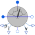

MultiSensorMultiphase sensor to measure current, voltage and power |

|
Information
This information is part of the Modelica Standard Library maintained by the Modelica Association.
This multi sensor measures currents, voltages and instantaneous electrical power of a multiphase system and has separated voltage and current paths. The plugs of the voltage paths are pv and nv, the plugs of the current paths are pc and nc. The internal resistance of each current path is zero, the internal resistance of each voltage path is infinite.
Connectors (8)
| pc |
Type: PositivePlug Description: Positive plug, current path |
|
|---|---|---|
| nc |
Type: NegativePlug Description: Negative plug, current path |
|
| pv |
Type: PositivePlug Description: Positive plug, voltage path |
|
| nv |
Type: NegativePlug Description: Negative plug, voltage path |
|
| i |
Type: RealOutput[m] Description: Current as output signal |
|
| v |
Type: RealOutput[m] Description: Voltage as output signal |
|
| power |
Type: RealOutput[m] Description: Instantaneous power as output signal |
|
| powerTotal |
Type: RealOutput Description: Sum of instantaneous power as output signal |
Used in Examples (1)
|
Modelica.Magnetic.FundamentalWave.Examples.BasicMachines ElectricalExcitedSynchronousInductionMachine starting direct on line |